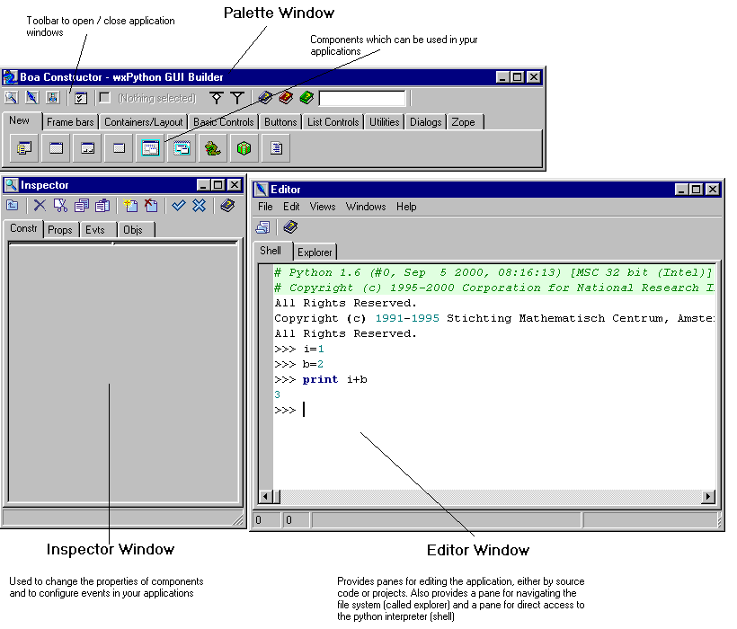

|

|

|

|
Getting Started Guide for Boa Constructor
|

|

|
|
Next:The
Palette Window Up:Getting Started
Guide for Boa Constructor Previous:Getting
Started Guide for Boa Constructor
1.1 Installing and Starting Boa
Constructor
Boa Constructor can be run on any 32bit windows platform, and on
any UNIX platform which is supported by the GTK+
windows toolkit.
Windows Installation
- Detailed instructions from
wxPython.org
- Install a recent version of
Python. As of Boa 0.4.0 you
must use version 2.2 or later.
- Install the wxPython
extensions. The standard installer will install both the wxWidgets
libraries and the wxPython wrappers. Ensure that the version of
wxPython matches your installed Python version.
- Boa 0.4.0 or higher requires to
use at least wxPython 2.5.4.1
- Use the installer for Boa (files
ending in "win32.exe"
- Or alternatively create a
directory for the Boa Constructor software, e.g. under
..\site-packages\boa
- Extract the Boa Constructor .zip
file to this directory. You may need to install a utility such as
winzip to extract the zip
file.
- Create a shortcut to the file
boa.py on your desktop.
- Select the new shortcut to run the Boa Constructor
Development Environment.
UNIX Installation
- Detailed instructions from
wxPython.org
- These components can also be
installed from binary RPMs.
- Install a recent version of
Python. As of Boa 0.4.0 you
must use version 2.2 or later.
- If GTK+
is not installed, then build and install it. You must use version
1.2 or later.
- If wxWidgets
is not installed, then build and install it. Use the version of
wxWidgets for GTK+ (there are several versions, e.g. the Microsoft
Windows version). You must use version 2.5 or later.
- If wxPython
is not installed, then build and install it. The version of wxPython
must match the version of wxWidgets, i.e. 2.5.x for wxWidgets 2.5.x.
- Boa 0.4.0 or higher requires to
use at least wxPython 2.5.4.1
- Boa constructor requires that the
Scintilla editor (stc) and
the open GL (ogl) components for wxWidgets are installed. These
components are distributed in both the wxPython and the wxWidgets
contrib directories. If in doubt, build and install the versions in
the wxPython release.
- Create a directory for the Boa
Constructor software, e.g. /usr/local/boa. Extract the Boa
Constructor package to this directory. The gunzip program may be
required to extract the archive
- Create a symbolic link to boa.py
on your path, e.g. ln -s /usr/local/boa/boa.py /usr/bin
- In your shell execute boa using the command 'boa.py'
You will now see the tools of the Boa Constructor
development environment

This
is divided into three sections/areas:
Installation from CVS
|
|
|
|
Getting Started Guide for Boa Constructor
|
|
|
|
Next:The
Palette Window Up:Getting Started
Guide for Boa Constructor Previous:Getting
Started Guide for Boa Constructor